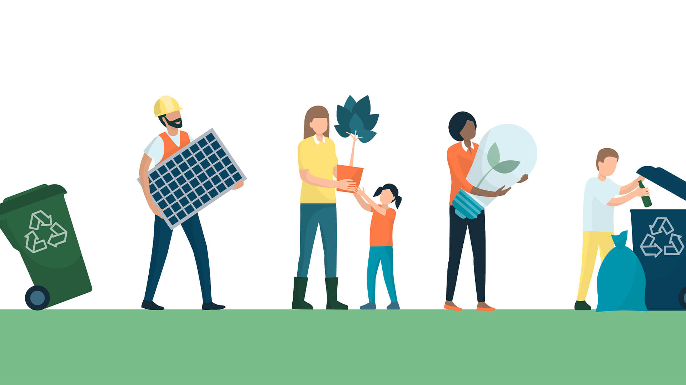
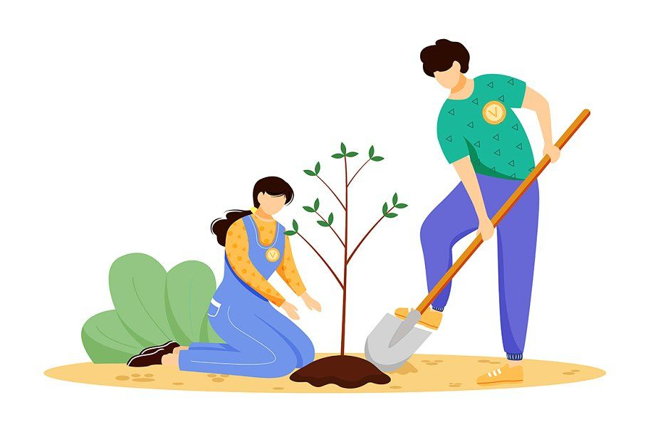
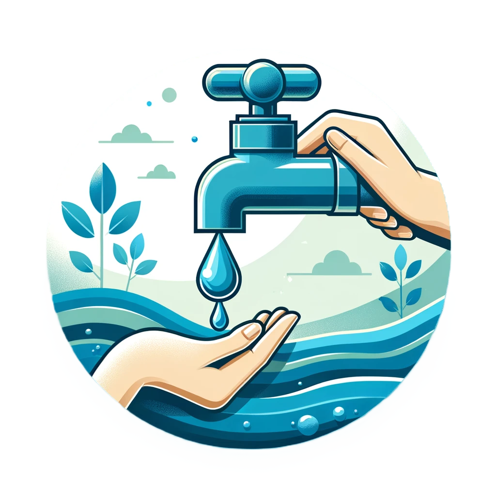

Understanding why the environment is important helps us make better choices every day. Let's explore how we can help our planet!
Planting trees is fun and helps the planet. Trees give us oxygen, shade, and homes for animals.
Take the quiz to find out how environment friendly your actions are.
1. How often do you use public transportation?
Daily2. Do you use reusable bags for shopping?
Yes3. How often do you recycle?
Always4. Do you reduce water usage by fixing leaks and taking shorter showers?
Yes5. How often do you eat plant-based meals?
Mostly or always6. Do you actively educate others about environmental issues and sustainability?
Yes7. Have you participated in or contributed to environmental cleanup activities or tree planting initiatives?
Yes, regularlySmall changes in our daily life can make a big difference. Here are some easy habits to start with:
Water is precious! Learn how saving water can make a big difference for our planet.
Ever wondered where waste should go? Let's find out and see how you can identify the correct waste disposal bins!
Please do it in order from the beginning